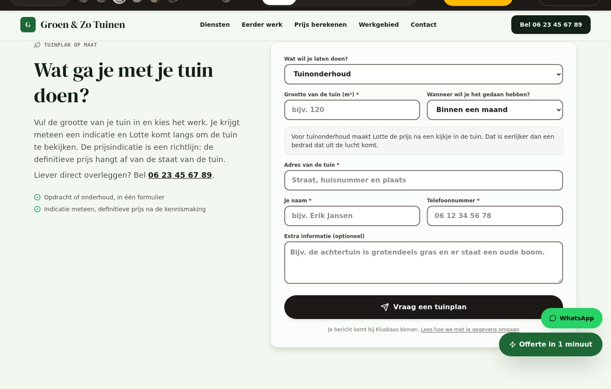

Het werk van de hovenier zelf
De lijst komt uit zijn eigen diensten: tuinonderhoud, sierbestrating, beplantingsplan, tuinontwerp. Geen verzonnen vakken, geen generieke keuzemenu's.
Elk vak heeft een eigen tool: de dakdekker zijn dakcheck, de elektricien zijn storingsmelding, de schilder zijn m²-calculator. De hovenier had er nog geen. Nu krijgt hij een tuinplan, met een prijsindicatie die uit zijn eigen prijzen komt.
Wat er verandert
De bezoeker kiest wat hij wil laten doen, hoe groot de tuin is en wanneer hij het gedaan wil hebben. De prijsindicatie komt uit de eigen diensten van de hovenier.
De lijst komt uit zijn eigen diensten: tuinonderhoud, sierbestrating, beplantingsplan, tuinontwerp. Geen verzonnen vakken, geen generieke keuzemenu's.
Voor het werk met een prijs per m² (sierbestrating, € 58 per m²) komt er een
indicatie: 120 m² is € 6.960. De berekening staat in
src/utils/garden.ts en gebruikt de prijs uit de gegevens van de
hovenier.
Tuinonderhoud en tuinontwerp hebben geen prijs per m². Daar zegt de pagina dat de hovenier de prijs maakt na een kijkje in de tuin, in plaats van een bedrag te tonen dat niemand kan waarmaken.
Zo snel mogelijk, binnen een maand, in het voorjaar, in het najaar of geen haast. Seizoenswerk vraagt om een seizoen; dat vraag je nu in één veld.
Het tuinplan komt binnen als garden-plan, met het werk, de grootte en
het moment erbij. Klusbaas ziet "Tuinplan" in zijn overzicht; de vakman ziet hem
in zijn eigen account.
Elk veld heeft een label, de verplichte velden staan in de tekst, fouten staan bij het veld zelf en de schermlezers krijgen de melding. De knoppen zijn groot genoeg om mee te tikken.
Hoe het eruitziet
De site in beeld
Eén echte schermafbeelding van het tuinplanformulier. Klik op de foto om hem groot te bekijken.

Let op De foto's in deze schermafbeeldingen zijn lokale plaatshouders. De site zelf laadt zijn foto's van Unsplash; in de sandbox is die dienst niet bereikbaar. Wat je hier ziet is de echte opmaak en de echte tekst.
De bestanden
| Bestand | Wat er verandert |
|---|---|
| src/components/tools/GardenPlanForm.tsx | Nieuw. Het formulier: werk, grootte, moment, adres, naam, telefoon en toelichting. |
| src/utils/garden.ts | Nieuw. De grootte van de tuin lezen, de indicatie rekenen en het bedrag tonen. |
| src/utils/garden.test.ts | Nieuw. Vijf proeven op de rekenregels. |
| src/components/tools/GardenPlanForm.test.tsx | Nieuw. Vier proeven op het formulier. |
| src/utils/lead.ts | Het aanvraagtype garden-plan met zijn eigen velden en het label "Tuinplan". |
| src/utils/contact.ts | De WhatsApp-boodschap van het tuinplan, met alle gegevens erin. |
| src/components/tools/TradeTool.tsx | De nieuwe tool wordt gekoppeld aan het vak. |
| src/data/tradesData.ts | De hovenier krijgt tool: 'garden-plan'. |
| src/types.ts | Het nieuwe gereedschap in de lijst van de tools. |
| ROADMAP.md | Rij 7.28 af, rij 8.10 af, DoD 29 erbij. |
| CHANGELOG.md | Wat er veranderd is. |
| AGENTS.md | De regel: een tool verzint nooit een prijs. |
| src/components/tools/README.md | De tabel van de tools per vak. |
De proeven
src/utils/garden.test.tssrc/utils/garden.test.tssrc/utils/garden.test.tssrc/components/tools/GardenPlanForm.test.tsxsrc/components/tools/GardenPlanForm.test.tsx/tmp/e2e_728.pyEerlijk
De definitieve prijs hangt af van de staat van de tuin, van de grond en van wat er weg moet. Dat staat letterlijk zo op de pagina. Er komt geen garantie die de hovenier niet kan waarmaken.
Tuinonderhoud gaat per uur en tuinontwerp per opdracht. Daar rekent de hovenier zelf mee. De tool rekent geen bedrag uit dat hij niet heeft staan.
De timmerman heeft die wel. De stappen van de tijdlijn staan nu nog in de component in plaats van in de gegevens van het vak — dat is de volgende stap (rij 8.11 van de roadmap).